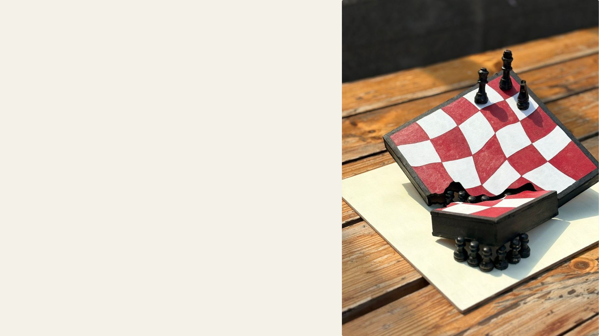

Underneath
The Throne
The Weight of the Game uses the structure of a chessboard to question the idea of a “fair” society. Golden elite pieces stand elevated, supported by crushed pawns beneath them symbolizing marginalized groups who literally hold up the system. In the second part, a few pawns begin to rise through collective effort and change, with a single red pawn symbolizing transformation not to become the next ruler, but to redefine the rules of the game itself.